|
惡靈古堡∼生存者-----地圖攻略
|
|
在生存者中，各個地圖中的敵人種類會因遊戲選擇的難度（Eazy、Normal）以及機率問題而有所不同 ，所以以下攻略所介紹地圖中的小敵人也可能會有改變。地圖中的數字代表玩家進入的順序。
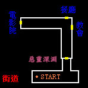 遊戲開始後，往左進入一條巷道，前去調查地上的屍體，然後解決突然冒出來的僵屍，從被解決掉的 僵屍身上取得生鏽鑰匙。 這裡的三條分歧以餐廳路線最為簡單，注意，一但分歧選擇了之後便無法再回頭。 分歧一 ───教會
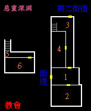 首次來到教會先往右手邊的房間，進入後小心被兩側僵屍夾擊，在桌上可以找到教會鑰匙， 而在一旁滴答滴答的座鐘上拿下發條轉動器。 接下來編號4的房間內有一株綠色藥草及「教會經理的日記」，埋伏有一隻僵屍，隨便玩家 要不要進去。下樓到地下室，走廊上的蜘蛛可能會阻擋玩家進入或離開，如果要將他解決， 要小心別中毒了。房間內拿取後門鑰匙後離開前往第二街道。 分歧一 ───餐廳
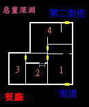 先往較近的門，門的左邊下去是儲酒的酒窖，有一株綠色藥草。往內進入冷凍庫，清光所有 僵屍後在最裡面將店主鑰匙拿走，回到餐廳廚房打開另一扇門。在餐廳打倒破窗而入的僵屍 後前往第二街道。 分歧一 ───戲院
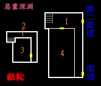 走廊上的僵屍是清也清不乾淨的，拿了綠色藥草就趕緊上樓。經過二樓走廊往放映室，在裡 側房間拿取35mm底片後回到放映機的地方使用，然後回到一樓，小心在走廊會遭到烏鴉襲 擊。此時一樓的播映室就可以進去了，拿到戲院入口鑰匙後前往第二街道。
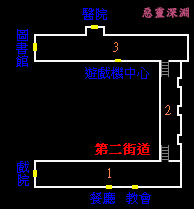 一來到這個地圖會聽到電話鈴響，但是接起來時對方就會掛掉，所以如果不想和附近的兩隻僵屍犬為 敵，可以直接下樓梯。在這個觀景的湖畔有重要道具損壞鑰匙在長椅上，有一隻利卡守著，待玩家再 前進幾步第二隻利卡會跳出襲擊，迅速拿取鑰匙和底部的綠色藥草後離開可避免受傷。 再度面臨分歧，這裡遊戲機中心的路線最簡易，圖書館路線則可以拿到手槍類中最有威力的手槍D。 分歧二───遊戲機中心
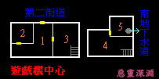 一進入此處Umbrella公司的UT暗殺部隊就出動了，進門後右邊的房間拿遊戲機中心鑰匙，小 心解決侵入的暗殺部隊，往另一個房間下樓，拿走吧台上的水溝蓋鐵棍，到小房間準備撬開 地上的水溝蓋，在此之前先拿走附近的手槍C，然後前往南地下水道。 分歧二───醫院
首先要拿到的道具在編號3的房間，調查控制台面板，使CT掃描器啟動，可以在掃描器平台 上找到藥劑室鑰匙，角落還有藍色藥草。在編號4的房間有一株綠色藥草，接著往下一個房 間打開最裡側牆上的電源開關，桌上可看到資料患者病歷。 上樓梯來到二樓，右手邊第一個房間有急救噴霧，第二個房間有綠色藥草，第三個房間除了 僵屍什麼都沒有。左手邊第一個房間有連射速度快的手槍B，第二個房間有水溝蓋鐵棍，拿 到了這個重要道具回到走廊搭乘電梯會遇上Tyrant，解決後搭上電梯。尋找水溝蓋打開它前 往南地下水道。 分歧二───圖書館
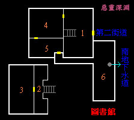 剛到這裡會碰上Andy，劇情結束後上樓，二樓樓梯旁有綠色藥草，進入藏書庫後門會被鎖 上，解決掉房內的獵人後就可以出去，別忘了桌上的手槍D。回到一樓進入旁邊的門，這裡 有資料Umbrella秘密檔案和幾隻利卡，下一個房間有幾隻僵屍和水溝蓋鐵棍，拿到這個重 要 道具後離開，外面有兩隻僵屍犬，角落可拿到紅色藥草，打開水溝蓋前往南地下水道。
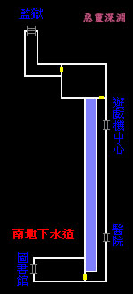 從圖書館下來的玩家要在黑暗中找尋紅色亮光打開燈光，之後迅速離開這個充滿蟑螂的地方。其餘兩 個分歧都可以安全的到達管理員室，調查桌上的資料管理員Andy日記，發生劇情，Lott首次登場， 結 束後別忘了旁邊櫃上的散彈。在通往監獄的爬梯前通路埋伏有一隻利卡，在轉角處稍停一下，對準樓 梯後衝過去吧！
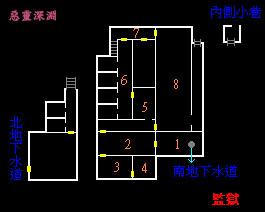 打開監獄大門進去，在底部左轉進入辦公室，要小心僵屍的夾擊，裡面的典獄長辦公室有資料典獄長 日記和單人囚室入口鑰匙。打開前往編號5的門，在走廊桌上拿繩索，底部的門無法打開，左轉進 入 囚室，面對一排囚室最左邊的囚室裡面有資料年輕人日記，在編號8的房間藏有散彈槍。 這裡出現了分歧，玩家可以選擇下樓或是離開監獄。如果選擇下樓，在裡面有蛾的房間可以找到通往 北地下水道的通風口，這條可說是捷徑，可是必須要對付兩條鱷魚。如果選擇離開監獄，在外面的廣 場先發制人解決掉幾隻獵人後，小巷拿取紅色藥草後爬上梯子，使用繩索前往內側小巷，這條路線上 安排有好幾隻的Tyrant。 分歧三───北地下水道
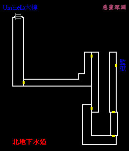 從監獄下來有兩側走道，兩隻獵人駐守，解決眼前這隻後，對面那會再玩家準備離開時跳過 來，不如先下手為強。爬上樓梯經過通風口，下個L型通道有兩隻獵人，接著來到剛才通道 的對面，還會蹦出一隻獵人，解決後拿取綠色藥草。接下來的通道很安全，轉角處有一株紅 色藥草。最後的通道一進入，門就被Andy鎖起來了，再繼續前進，突然有鱷魚衝撞進來， 這時千萬不要往後跑，因為會引發另一隻鱷魚，先專心對付眼前這隻，不要使用手槍以外的 武器，也不要使用手槍B，不停的連射解決他。一定時間後另一隻鱷魚也從後頭跑進來，打 了他也沒獎勵，打倒擋路的這一隻就跑吧！ 分歧三───內側小巷
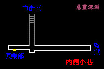 一來到這長長的巷子就看到Tyrant從遠方走來，趕快用手槍朝著他的頭部連射就可以安全的 打倒他。這裡又出現分歧，上樓往市街區會遇上一群UT暗殺部隊，俱樂部則有三隻Tyrant等 待玩家。 市街區───
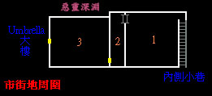 這三個區塊依序有綠色藥草、紅色藥草、散彈，拿完後前往Umbrella大樓。 俱樂部───
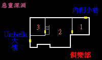 這裡的三個區塊都有一個Tyrant，後面兩隻等到玩家拿到在休息室裡的俱樂部大廳鑰匙後才 會出現，在編號3的房間空間太小，如果不想打，拿到鑰匙後轉身沿著牆壁逃走。吧台上有 綠色藥草，接著前往Umbrella大樓。
Umbrella大樓前有紅色藥草，進入Umbrella大廳看到的道具是軍用手槍子彈，拿的時候要小心在大廳中 出現的獵人或是利卡。離開大廳前去搭乘電梯，兩個電梯只有一個能乘坐，另一個壞掉電梯前有綠色 藥草。 二樓的重點是拿到卡片鑰匙，它就位於二樓編號5的房間，不要忽略在走廊上的獵人或利卡（和一樓 大廳出現的敵人種類會不相同），拿卡片鑰匙之前Ark似乎想起了什麼，想拿鑰匙時遇上Tyrant破牆而 出，卡片鑰匙飛落到辦公桌旁，可以拿了就跑，但是這裡空間很大，打起來也很輕鬆，走之前別忘了 資料Vincent日記。 經過充滿僵屍的控制中心，在監控室碰到Lily和Lott，拿取資料Vincent竊聽日記後離開準備搭電梯下樓 ，此時Tyrant再度破牆而出，擊敗他並且拿走角落的紅色藥草。 回到一樓編號9的長廊，在經過一道藍色感應器前停住，打開旁邊的開關後再迅速的越過（有時間限 制），如果沒有實行這個步驟，就會出現一堆莫名其妙的敵人，接著下樓梯到編號10的停車場。用不 著理會那幾隻僵屍犬，拿了放在汽車引擎蓋上的重要武器榴彈槍快溜，來到污水水渠。
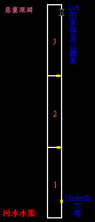 這個地圖上什麼道具也沒有，第一個空間沒有敵人，第二個空間有一隻埋伏在橋上的獵人，趁他還沒 發現玩家前先下手為強，第三個空間有幾隻毒蜘蛛，繞過他們前往Lott的家。
從污水水渠上來，看到對面有一堆僵屍被檔在門外，先拿取左手邊的藍色和綠色藥草，然後進入Lott 的家。屋內兩個房間之一的編號3需要去找出躲在衣櫃裡的Lily，編號4則有一隻僵屍和一株綠色藥草 。離開屋子發現外面的僵屍都跑進來了，可以先跑到放藥草的地方再一隻隻解決。 編號6的地方有2隻僵屍犬，請務必先解決，然後再接近編號7的門引發獵人破門而出，在破門的同時 向後退一步就可以避免他的第一擊，門內有綠色藥草。打開編號8的開關後迅速轉身離開，因為會有 利卡從窗戶跳進來。搭上列車，下車時有獵人襲擊，看玩家要逃還是要打。來到鐵橋Tyrant便迎面走 來，後面還有兩隻僵屍犬，剛來到這裡時先往後退一步，運氣好的話那兩隻僵屍犬就會被卡住。 編號10的地方有一株紅色藥草，遇上分歧，山道是輕鬆又好走的路，炭坑在Normal模式中會出現一大 堆獵人，懸崖小路有好幾隻Tyrant。
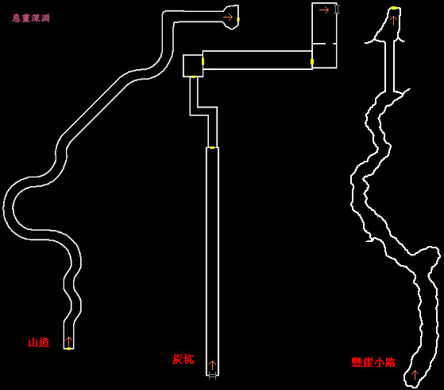 分歧四───山道 山道分為兩部分，前半部埋伏有許多暗殺部隊，採用聽聲辨人的方法解決他們，或者是不停 的衝衝衝，一路衝到底。後半段裝設有紅外線機關槍，當道路出現一個下坡路段代表後半段 開始了，玩家可以一一躲避這些紅外線，也可以衝過去，那些機關槍的速度根本就沒法追上 ，之後前往郊外大屋。 分歧四───炭坑 這條路在Easy模式是一堆的僵屍，Normal模式則是一堆的獵人，就看玩家想要怎麼通過了， 而這條難走的道路安排有硫酸彈和綠色藥草作為獎勵，通過後前往郊外大屋。 分歧四───懸崖小路 此處共會出現四隻Tyrant，由聲音可判斷遠近，這裡的Tyrant身上都沒有道具。途中要小心不 要掉下去了，解決完後前往郊外大屋。
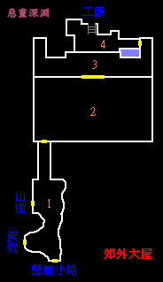 出來後迅速往出口移動以避開獵人或是僵屍犬。躲過大屋大門前的僵屍犬或蜘蛛，在前院有三隻獵人 駐守，左側有一株綠色藥草，右邊可以進入屋內。屋內通往二樓的樓梯已經中斷，只能走通往地下的 樓梯，下樓前帶走附近的榴彈，前往工廠地下一樓。
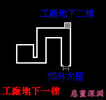 在ㄇ字型的鐵橋上有兩隻Tyrant，要小心其中一隻靠得很近。打開裡側房間牆上的開關，搭電梯前往 工廠地下二樓。
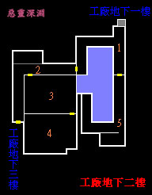 電梯下來，這個通道的僵屍是清不完的，往右手邊的L型走廊，注意利卡，進入實驗室。實驗室桌上 有榴彈，再往裡面的房間走，有利卡埋伏，桌上有啟動光碟和資料工廠職員日記，拿完後衝過走廊離 開，因為上面會有利卡掉下來。外面的實驗室跑出兩隻食人植物，但是他們和玩家的距離足夠玩家從 容的打敗他們。 回到這樓一開始的通道，往另一邊的門前進，在編號5的鐵橋底部調查兩個螢幕打開電源，此時不遠 處的小隔間也被打開並出現幾隻僵屍。再次來到編號2的L型走廊，調查牆上的開關，使用啟動光碟打 開一旁隔間的牆，牆後出現兩隻食人植物和一具屍體，屍體上有重要道具ID卡。到手後使用它打開走 廊底部的開關，前往工廠地下三樓。
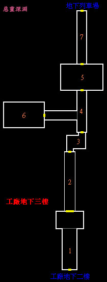 首先出現兩隻有毒食人植物，解決後打開牆上開關，一面鐵牆升起，後面的空間有一株藍色藥草和火 炎彈。接著編號2的走道出現一隻Tyrant，必須擊倒他才能繼續前進。編號3的地方擊倒一隻獵人解救 Lott，由Lott口中得知逃出這裡的方法。角落有急救噴霧。 經過編號4的走道往編號5，打倒左右兩邊的僵屍後打開中央的開關，旁邊有手槍子彈。回到走廊，打 開牆上的開關，通往編號6的走道上出現兩隻食人植物，建議先跑開再解決。 編號6除了桌上的工廠負責人鑰匙，一旁還有資料原料抽出方法，離開前先整理裝備，因為要和第一 型態的Hypnoses決戰了，建議使用散彈槍或是軍用手槍。先來迎接玩家的是Andy或Vincent或UT部隊隊 長，這裡決定於分歧二走的路線。打敗Hypnoses後由編號5處到編號7 ，這個直直的長廊可能會出現 UT暗殺部隊或是Tyrant，要逃或是要打都可以，這裡的Tyrant同樣沒有道具。之後前往地下列車場。
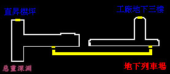 建議先左轉去拿散彈，再右轉去打開列車閘門的開關，開關一打開就出現一群UT暗殺部隊，清掉幾 隻擋路的直接上列車吧！下列車後前往 直昇機坪。
在 直昇機坪要連續對付Hypnoses的二、三型態，這裡建議的基本裝備：一定數量的散彈或是榴彈、很 少使用而累積下來的硫酸彈加火炎彈25發、全恢復道具一個。 首先第二型態要使用打帶跑戰術，不停的繞場，大約繞半圈就立刻按下瞄準鍵回頭射他一槍，不要貪 心，射完一槍後趕快繼續跑，不用多久，玩家就可以毫髮無傷的將他解決。 第三型態就要拿出庫藏的硫酸彈和火炎彈，在戰鬥開始後他向玩家跑來，不用閃不用跑，拚命的朝著 他的頭部射擊，如果被他舉起只要射擊他的頭部就可以無傷，而且在他不停被攻擊的情況下他會試著 閃躲，玩家要隨時瞄準他猛射，這樣他就不會有太多機會攻擊玩家，很快的就可以破關了。 |
惡靈深淵Biohazard Abyss http://98.to/coolbio